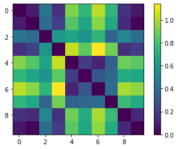
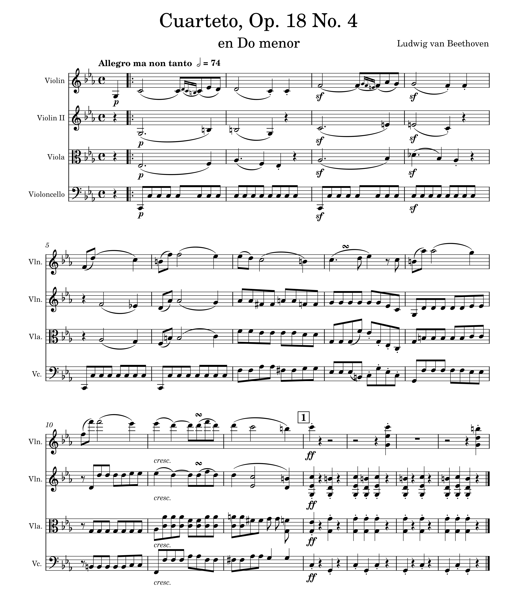

Audio Similarity & Transcription
Week 10
Calculating Similarity
Extracte the Chroma features in SonicVisualizer and generate a similarity matrix.
Chroma Features
Dover Quartet: (download CSV here):

Emerson Quartet: (download CSV here):
Menuhin Competition: (download CSV here):
Visualisations
Similarity matrices of C's & A's (left) & of all notes (right):
Mean feature vector representation (left) & similarity within 2D space (right):
Polyphonic Transcription
Open your piece of music from Week 2 in Musescore. Export it as a WAV file and as an image file.
Original track:
Image of score:
Open the WAV file in SonicVisualizer. Export a Polyphonic Transcription.
Polyphonic transcription:
Image of transcription:
Compare the transcription to the original, reflecting on its accuracy and identifying any information that has been lost.
The polyphonic transcription maintains some of the properties of the original MIDI render, including some correct chords and harmonies. The length of the transcription's output audio file was also similar to the original clip.
However, the transcription was unable to accurately capture the correct time signature of the original, transcribing the clip as 3/4 instead of common time. The output audio file is the same length as the original, though the note-length values were not accurate. The rhythm also had some issues, such as the first few bars in the original being transcribed as one large chord which spanned two bars.
The stacatto part of the clip near the end was somewhat preserved in the transcription, although not entirely accurately.
Additionally, the transcription seemed to pick up some harmonics and sub-harmonics as actual notes, resulting in many extremely high and extremely low notes being transcribed.
A fair amount of information present in the original was lost, such as information on the title, composer, and instrumentation, as well as dynamic and articulation markings (although some articulation was preserved such as some stacatto marks).